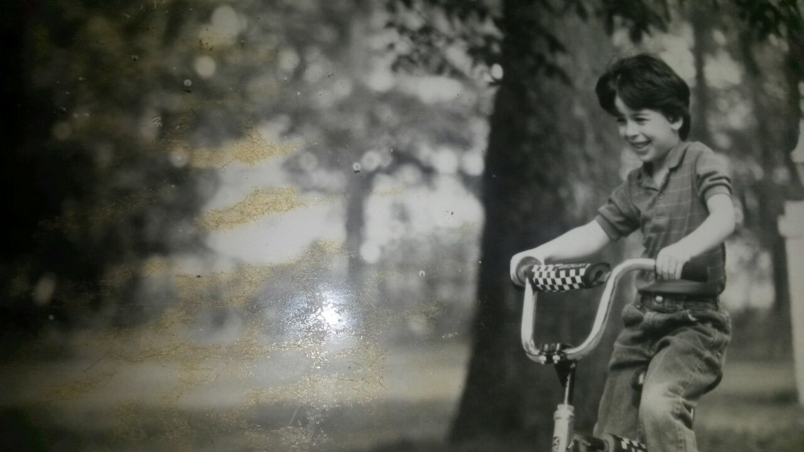

Principios de trabajo
Todo el que practica algo mucho tiempo sabe que "más vale maña que fuerza". No es distinto acá. Se empieza de a poco, pero se aprende siempre.
Todo el que practica algo mucho tiempo sabe que "más vale maña que fuerza". No es distinto acá. Se empieza de a poco, pero se aprende siempre.
Correr me llevó a varias partes. Me calmó mentalmente en la adolescencia. Con los pies conocí Buenos Aires, La Paz, Chicago, São Paulo y sigo.
Hoy, más de 20 años después de empezar, creo que correr sirve para conocer y adaptarse al entorno, para encontrar facilidad de movimiento, y para una búsqueda que es personal a cada uno.

En dos sesiones seguidas revisamos los principios de trabajo para correr ó caminar aplicando la técnica